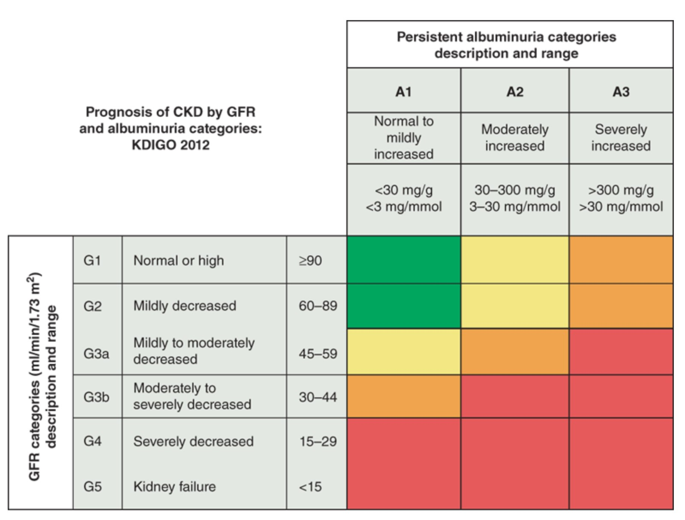
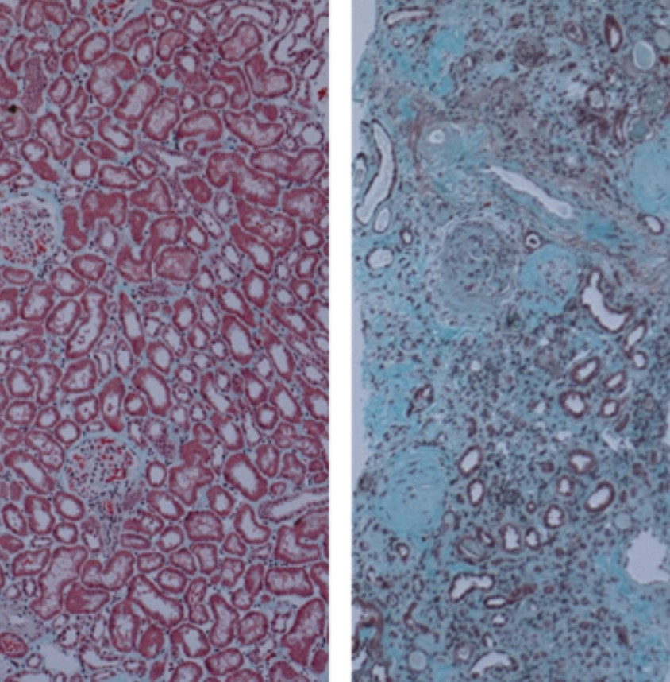

Chronic kidney injury


It has been increasingly recognized that one or more episodes of acute kidney injury are associated with an increased risk of developing CKD.
A striking example is the finding of allelic versions of the APOL1 gene, of West African population ancestry, which contributes to the several-fold higher frequency of certain common etiologies of nondiabetic CKD (e.g., focal segmental glomerulosclerosis) observed among African and Hispanic Americans, in major regions of continental Africa and the global African diaspora.
Stages 1 and 2 CKD are usually asymptomatic, such that the recognition of CKD occurs more often as a result of laboratory testing in clinical settings other than suspicion of kidney disease. Moreover, in the absence of the risk factors noted above, population-wide screening is not recommended. With progression to CKD stages 3 and 4, clinical and laboratory complications become more prominent. Virtually all organ systems are affected, but the most evident complications include anemia and associated easy fatigability; decreased appetite with progressive malnutrition; abnormalities in calcium, phosphorus, and mineral-regulating hormones, such as 1,25(OH)2D3 (calcitriol), parathyroid hormone (PTH), and fibroblast growth factor 23 (FGF-23); and abnormalities in sodium, potassium, water, and acid-base homeostasis. Many patients, especially the elderly, will have eGFR values compatible with stage 2 or 3 CKD. However, the majority of these patients will show no further deterioration of renal function. The primary care physician is advised to recheck kidney function, and if it is stable and not associated with proteinuria, the patient can usually be followed with interval repeat testing without referral to nephrologist. However, caution should be exercised in terms of potential exposure to nephrotoxins or interventions that risk acute kidney injury (AKI) and also with respect to medication dose adjustment. If repeat testing shows declining GFR, albuminuria, or uncontrolled hypertension, referral to a nephrologist is appropriate. If the patient progresses to stage 5 CKD, toxins accumulate such that patients usually experience a marked disturbance in their activities of daily living, well-being, nutritional status, and water and electrolyte homeostasis, eventuating in the uremic syndrome.
ETIOLOGY AND EPIDEMIOLOGY
The most frequent cause of CKD in North America and Europe is diabetic nephropathy, most often secondary to type 2 diabetes mellitus. Patients with newly diagnosed CKD often have hypertension.
It is now appreciated that such individuals can be considered in two categories.
The first includes patients with a subclinical primary glomerulopathy, such as focal segmental or global glomerulosclerosis (Chap. 308). The second includes patients in whom progressive nephrosclerosis and hypertension is the renal correlate of a systemic vascular disease, often also involving large- and small-vessel cardiac and cerebral pathology.
PATHOPHYSIOLOGY AND BIOCHEMISTRY OF UREMIA
It is thus evident that the serum concentrations of urea and creatinine should be viewed as being readily measured, but very incomplete surrogate markers for retained toxins, and monitoring the levels of urea and creatinine in the patient with impaired kidney function represents a vast oversimplification of the uremic state.
*serum urea, creatinine는 환자의 uremic state를 oversimplify함.
A host of metabolic and endocrine functions normally performed by the kidneys is also impaired, and this results in anemia, malnutrition, and abnormal metabolism of carbohydrates, fats, and proteins.
Furthermore, plasma levels of many hormones, including PTH, FGF-23, insulin, glucagon, steroid hormones including vitamin D and sex hormones, and prolactin change with CKD as a result of reduced excretion, decreased degradation, or abnormal regulation.
Thus, the inflammation associated with CKD is important in the malnutrition-inflammation-atherosclerosis/calcification syndrome, which contributes in turn to the acceleration of vascular disease and comorbidity associated with advanced kidney disease.
- (1) those consequent to the accumulation of toxins that normally undergo renal excretion;
- (2) those consequent to the loss of other kidney functions, such as fluid and electrolyte homeostasis and hormone regulation;
- (3) progressive systemic inflammation and its vascular and nutritional consequences.
FLUID, ELECTROLYTE, AND ACID-BASE DISORDERS
- Sodium and Water Homeostasis
- Many forms of kidney disease (e.g., glomerulonephritis) disrupt this balance such that dietary intake of sodium exceeds its urinary excretion, leading to sodium retention and attendant extracellular fluid volume (ECFV) expansion.
- In addition to problems with salt and water excretion, some patients with CKD may instead have impaired renal conservation of sodium and water.
- Potassium Homeostasis
- In CKD, the decline in GFR is not necessarily accompanied by a parallel decline in urinary potassium excretion, which is predominantly mediated by aldosterone-dependent secretion in the distal nephron. Another defense against potassium retention in these patients is augmented potassium excretion in the GI tract.
- Hypokalemia is not common in CKD and usually reflects markedly reduced dietary potassium intake, especially in association with excessive diuretic therapy or concurrent GI losses. The use of potassium supplements and potassium-sparing diuretics may be risky in patients with impaired renal function, and needs to be monitored closely.
- Metabolic Acidosis
- In most patients, the metabolic acidosis is mild; the pH is rarely <7.32 and can usually be corrected with oral sodium bicarbonate supplementation.
- Alkali supplementation may, in addition, attenuate the catabolic state and possibly slow CKD progression and is recommended when the serum bicarbonate concentration falls below 20–23 mmol/L.
DISORDERS OF CALCIUM AND PHOSPHATE METABOLISM
The principal complications of abnormalities of calcium and phosphate metabolism in CKD occur in the skeleton and the vascular bed, with occasional severe involvement of soft tissues.
- Bone Manifestations of CKD
1) high bone turnover with increased PTH levels (including osteitis fibrosa cystica, the classic lesion of secondary hyperparathyroidism)
- Interestingly, high levels of FGF-23 are also an independent risk factor for left ventricular hypertrophy and mortality in CKD, dialysis, and kidney transplant patients. Moreover, elevated levels of FGF-23 may indicate the need for therapeutic intervention (e.g., phosphate restriction), even when serum phosphate levels are within the normal range.
- Clinical manifestations of severe hyperparathyroidism include bone pain and fragility, brown tumors, compression syndromes, and erythropoietin (EPO) resistance in part related to the bone marrow fibrosis. Furthermore, PTH itself is considered a uremic toxin, and high levels are associated with muscle weakness, fibrosis of cardiac muscle, and nonspecific constitutional symptoms.
- guidelines recommend a target PTH level between 150 and 300 pg/mL, recognizing that very low PTH levels are associated with adynamic bone disease and possible consequences of fracture and ectopic calcification.
2) osteomalacia due to reduced action of the active forms of vitamin D
3) low bone turnover with low or normal PTH levels (adynamic bone disease)
- It is characterized by reduced bone volume and mineralization and may result from excessive suppression of PTH production, chronic inflammation, or both.
- Suppression of PTH can result from the use of vitamin D preparations or from excessive calcium exposure in the form of calcium-containing phosphate binders or high-calcium dialysis solutions.
- Complications of adynamic bone disease include an increased incidence of fracture and bone pain and an association with increased vascular and cardiac calcification.
* or most often combination of these.
CARDIOVASCULAR ABNORMALITIES
Hypertension is one of the most common complications of CKD.
The absence of hypertension may signify poor left ventricular function. Indeed, in epidemiologic studies of dialysis patients, low blood pressure actually carries a worse prognosis than does high blood pressure.
The use of exogenous erythropoiesis-stimulating agents can increase blood pressure and the requirement for antihypertensive drugs.
Management of Hypertension
In all patients with CKD, blood pressure should be controlled to levels recommended by national guideline panels. In CKD patients with diabetes or proteinuria >1 g per 24 h, blood pressure should be reduced to<130/80 mmHg, if achievable without prohibitive adverse effects.
ACE inhibitors and ARBs appear to slow the rate of decline of kidney function in a manner that extends beyond reduction of systemic arterial pressure and that involves correction of the intraglomerular hyperfiltration and hypertension.
Occasionally, introduction of ACE inhibitors and ARBs can actually precipitate an episode of acute kidney injury, especially when used in combination in patients with ischemic renovascular disease.
Progressive decline in GFR should prompt discontinuation of these agents.
HEMATOLOGIC ABNORMALITIES
- Anemia
A normocytic, normochromic anemia is observed as early as stage 3 CKD and is almost universal by stage 4.
Clinical manifestations include fatigue and diminished exercise tolerance, angina, heart failure, decreased cognition and mental acuity, and impaired host defense against infection.
*Treatment : The availability of recombinant human ESA(exogenous erythropoietic-stimulating agents) has been one of the most significant advances in the care of renal patients since the introduction of dialysis and renal transplantation
- Abnormal hemostasis
Patients with later stages of CKD may have a prolonged bleeding time, decreased activity of platelet factor III, abnormal platelet aggregation and adhesiveness, and impaired prothrombin consumption.
Interestingly, CKD patients also have a greater susceptibility to thromboembolism, especially if they have renal disease that includes nephrotic-range proteinuria.
*Treatment : Given the coexistence of bleeding disorders and a propensity to thrombosis that is unique in the CKD patient, decisions about anticoagulation that have a favorable risk-benefit profile in the general population may not be applicable to the patient with advanced CKD.
OTHER ABNORMALITIES
- Gastritis, peptic disease, and mucosal ulcerations at any level of the GI tract occur in uremic patients and can lead to abdominal pain, nausea, vomiting, and GI bleeding.
- Glucose metabolism is impaired in CKD.
- Many anti-hyperglycemic agents, including the gliptins, require dose reduction in renal failure, and some, such as metformin and sulfonylureas are contraindicated when the GFR is less than half of normal.
- In women with CKD, estrogen levels are low, and menstrual abnormalities, infertility, and inability to carry pregnancies to term are common. When the GFR has declined to ~40 mL/min, pregnancy is associated with a high rate of spontaneous abortion, with only ~20% of pregnancies leading to live births, and pregnancy may hasten the progression of the kidney disease itself.
- Men with CKD have reduced plasma testosterone levels, and sexual dysfunction and oligospermia may supervene.
- Pruritus is quite common and one of the most vexing manifestations of the uremic state.
EVALUATION AND MANAGEMENT OF PATIENTS WITH CKD
Initial approach
Particular aspects of the history that are germane to renal disease include a history of hypertension (which can cause CKD or more commonly be a consequence of CKD), diabetes mellitus, abnormal urinalyses, and problems with pregnancy such as preeclampsia or early pregnancy loss.
Drugs to consider include nonsteroidal anti-inflammatory agents, cyclooxygenase-2 (COX-2) inhibitors, antimicrobials, chemotherapeutic agents, antiretroviral agents, proton pump inhibitors, phosphate-containing bowel cathartics, and lithium.
In evaluating the uremic syndrome, questions about appetite, weight loss, nausea, hiccups, peripheral edema, muscle cramps, pruritus, and restless legs are especially helpful.
Laboratory investigations
- Multiple myeloma : Serum and urine protein electrophoresis, looking for multiple myeloma, should be obtained in all patients >35 years with unexplained CKD, especially if there is associated anemia and elevated, or even inappropriately normal, serum calcium concentration in the face of renal insufficiency.
- Glomerulonephritis : autoimmune diseases such as lupus and underlying infectious etiologies such as hepatitis B and C and HIV should be tested.
- Metabolic bone disease : Serum concentrations of calcium, phosphorus, vitamin D, and PTH should be measured to evaluate metabolic bone disease.
- Proteinuira : A 24-h urine collection may be helpful, because protein excretion >300 mg may be an indication for therapy with ACE inhibitors or ARBs.
Imaging studies
The most useful imaging study is a renal ultrasound.
Because it takes time for kidneys to shrink as a result of chronic disease, the finding of bilaterally small kidneys supports the diagnosis of CKD of long-standing duration. If the kidney size is normal, it is possible that the renal disease is acute or subacute.
The exceptions are diabetic nephropathy (where kidney size is increased at the onset of diabetic nephropathy before CKD supervenes), amyloidosis, and HIV nephropathy, where kidney size may be normal in the face of CKD.
Kidney biopsy
Other contraindications to renal biopsy include uncontrolled hypertension, active urinary tract infection, bleeding diathesis (including ongoing anticoagulation), and severe obesity
In the CKD patient in whom a kidney biopsy is indicated (e.g., suspicion of a concomitant or superimposed active process such as interstitial nephritis or in the face of accelerated loss of GFR), the bleeding time should be measured, and if increased, desmopressin should be administered immediately prior to the procedure.
In the absence of a clinical diagnosis, kidney biopsy may be the only recourse to establish an etiology in early-stage CKD. However, as noted above, once the CKD is advanced and the kidneys are small and scarred, there is little utility and significant risk in attempting to arrive at a specific diagnosis.
** Genetic testing is increasingly entering the repertoire of diagnostic tests, since the patterns of injury and kidney morphologic abnormalities often reflect overlapping causal mechanisms, whose origins can sometimes be attributed to a genetic predisposition or cause.
TREATMENT
Reducing Intraglomerular Hypertension and Proteinuria
Control of glomerular hypertension is important in slowing the progression of CKD. : 130/80 mmHg as a target blood pressure in proteinuric CKD patients.
ACE inhibitors and ARBs are effective in slowing the progression of renal failure in patients with advanced stages of both diabetic and nondiabetic CKD.
The combination is associated with a greater reduction in proteinuria compared to either agent alone.
However, there is a greater incidence of acute kidney injury and adverse cardiac events from such combination therapy.
Medical dose adjustment
Drug dose adjustment in CKD
Preparation for renal replacement therapy
Clear indications for initiation of renal replacement therapy for patients with CKD include uremic pericarditis, encephalopathy, intractable muscle cramping, anorexia, and nausea not attributable to reversible causes such as peptic ulcer disease, evidence of malnutrition, and fluid and electrolyte abnormalities, principally hyperkalemia or ECFV overload, that are refractory to other measures.
Previous studies suggested that starting dialysis before the onset of severe symptoms and signs of uremia was associated with prolongation of survival.